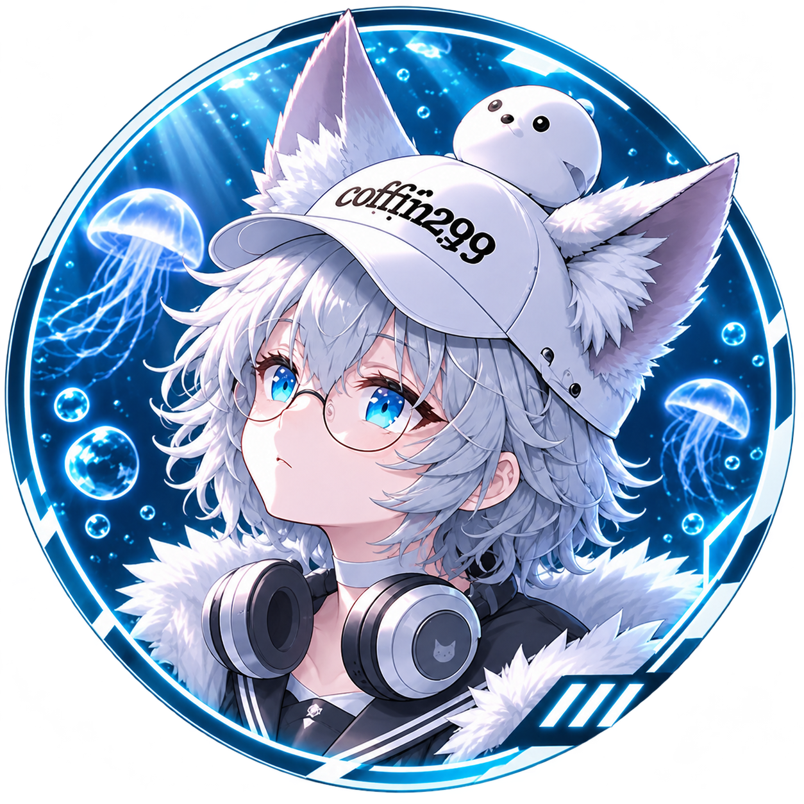

AI-assisted Software Development
LLMを使って、日常の「あったらいいな」を動くソフトウェアにします。
About
AIプログラマー & 3DCGアーティスト

AIプログラマー & 3DCGアーティスト
日々のゲーム体験と日常から生まれる「コレがあったらいいな」のアイデアをLLMを駆使して形にするのが得意です。プログラミングと3DCGの両方に興味を持ち、新しい技術を学ぶことを楽しんでいます。
LLMを使って、日常の「あったらいいな」を動くソフトウェアにします。
対話、音楽、通知、管理まで、サーバーの中で動くボットを作っています。
MMDとUnityで、キャラクターの絵作りとアニメーションを続けています。
仮想空間のアバターと、その場で届く表現を探しています。
作ったものはGitHubで公開し、記録として残しています。
様々なジャンルのゲームをプレイし、3DCG制作のインスピレーションを得ています。
音楽を聴くことが好きで、Discord Botでの音楽再生システムも開発しています。
日常の「あったらいいな」をAI技術を使って実際に形にすることが趣味です。